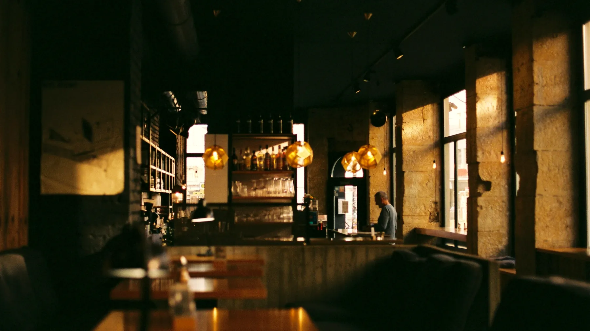
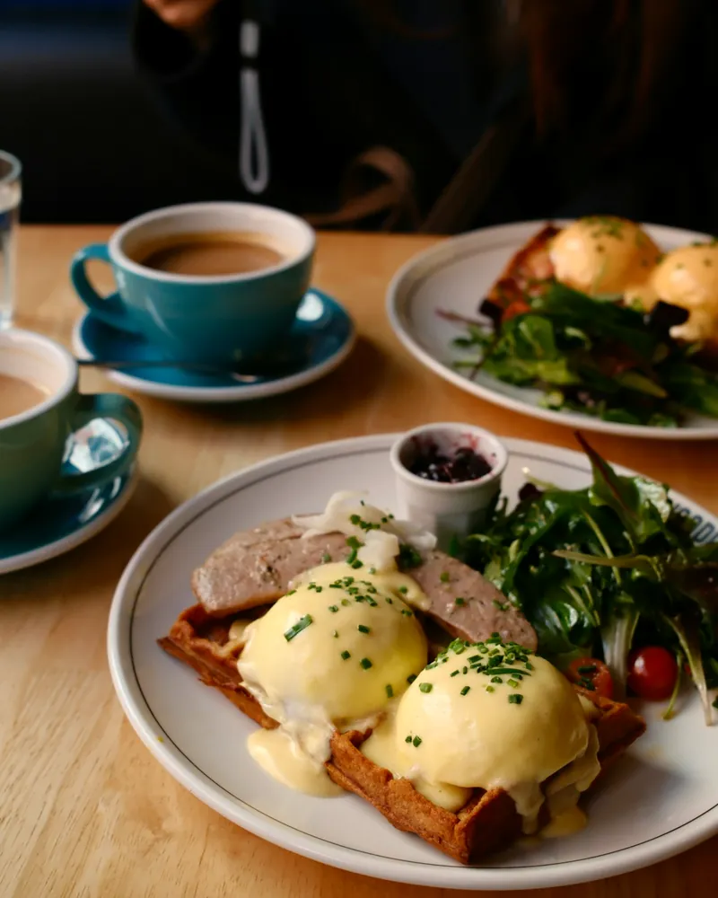
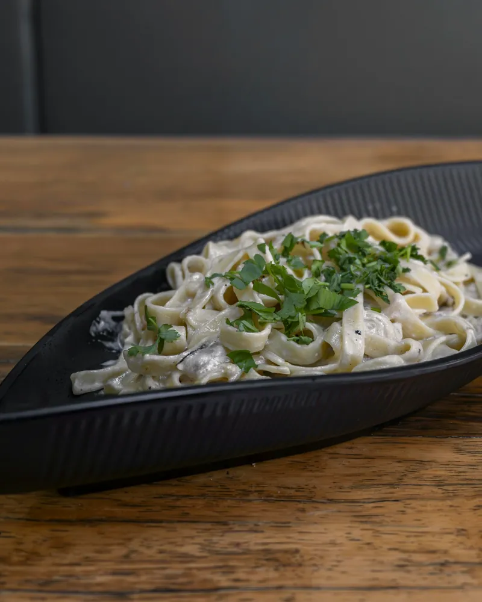
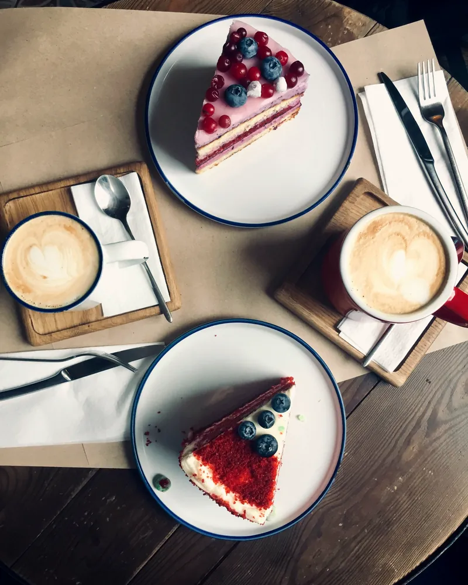
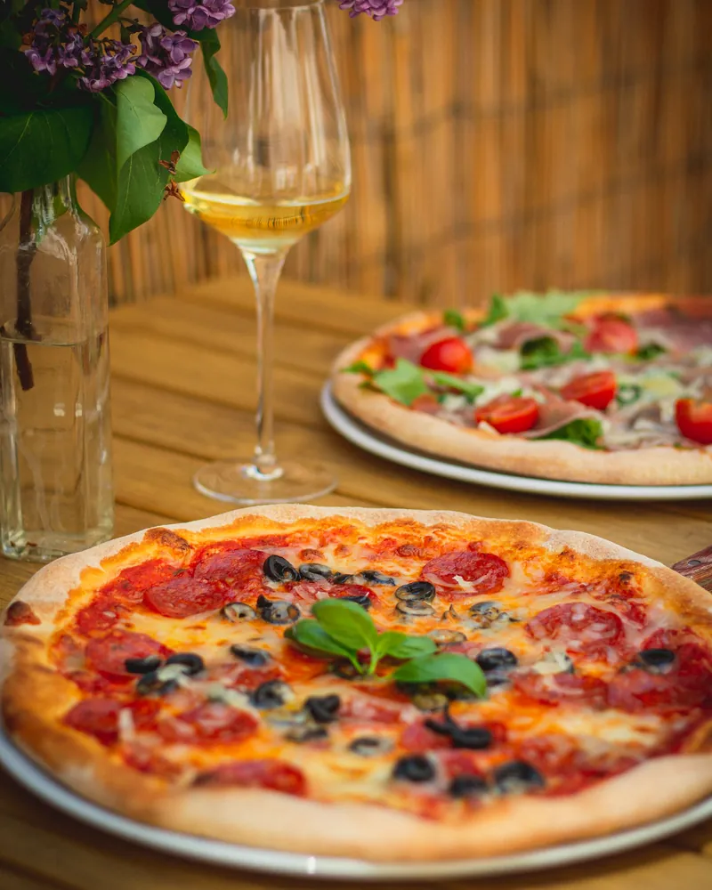
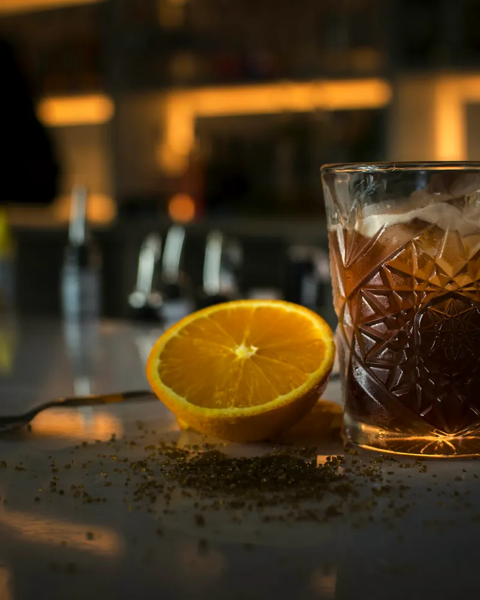
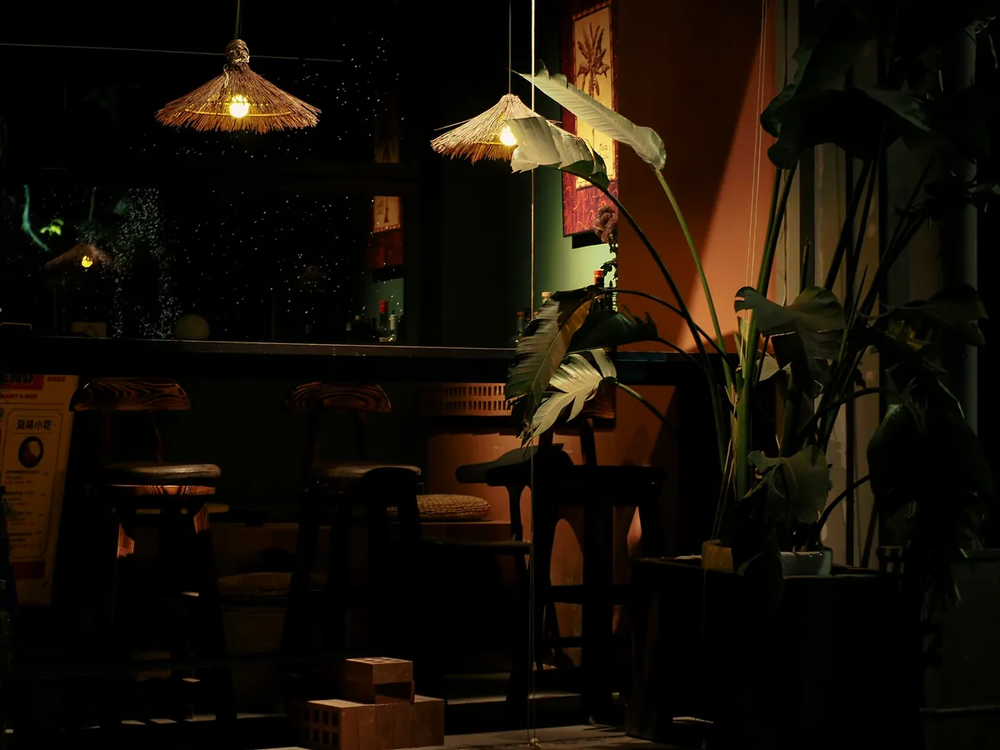
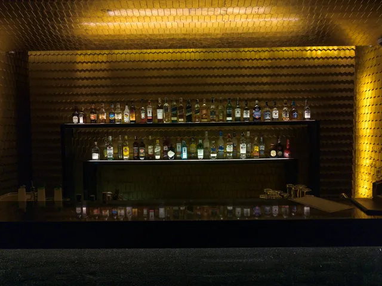
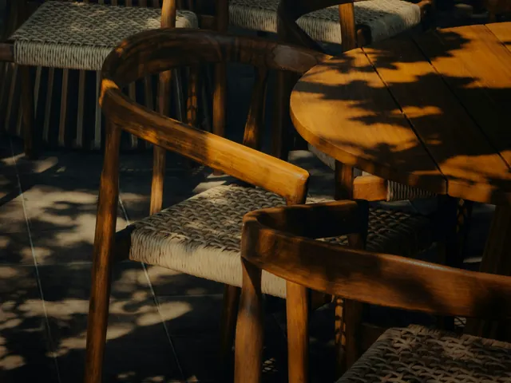

Доставка
Возим сами, своим курьером — еда доезжает такой, какой её отдали с кухни, а не такой, какой её довёз агрегатор.
Заказать по телефонуСмотрим на часы…
Позвонить
Завтрак, обед, кофе с десертом, ужин и бар — в одном зале в Зеленодольске. Каждый час здесь свой свет.
--:-- Считаем, сколько нам ещё работать сегодня…
Три зала в городе: Гоголя, 42А Ленина, 63 Космонавтов, 11
Зал открывается в девять и гаснет в полночь. За эти пятнадцать часов он успевает побыть завтраком у окна, обедом на бегу, паузой с десертом, ужином на компанию и баром. Прокрутите ленту — свет пойдёт за вами.
09:00 · открытие00:00 · закрытие

Кофе, яйца и утренний свет из больших окон. Завтраки подают с самого открытия — не только по выходным.

Паста альфредо — та самая, что дала кафе имя. В будни есть бизнес-ланч, если обед у вас на час.

Горячий шоколад — то, за чем сюда возвращаются чаще всего. Плюс кофе с собой, если бежите мимо.

Пицца, роллы, тартары и стол на компанию. Столик на вечер лучше занять заранее — звоните.

Свет приглушают, вечер переходит в бар: коктейли, музыка и разговор — до самого закрытия.
Листайте вбок — день пойдёт дальше



Тёмное дерево, латунный свет, зелёный бархат и стеллажи с живыми растениями. Летом открывается терраса, зимой топится камин, и оба зала одинаково хорошо годятся и для завтрака вдвоём, и для компании на двенадцать человек.
Это не наши слова — это то, что чаще всего пишут гости в отзывах. Ниже доли положительных упоминаний по карточке Яндекс.Карт.
Данные карточки Яндекс.Карт на август 2026 года.
Возим сами, своим курьером — еда доезжает такой, какой её отдали с кухни, а не такой, какой её довёз агрегатор.
Заказать по телефонуНакрываем стол там, где вам нужно: офис, площадка, дом. Меню собираем под повод и число гостей.
Обсудить событиеДень рождения, свадьба, корпоратив, поминальный обед — зал можно занять целиком и договориться о меню заранее.
Забронировать залУ каждого свой график — время под адресом живое, оно считается прямо сейчас, в вашем часовом поясе.
—
—
—